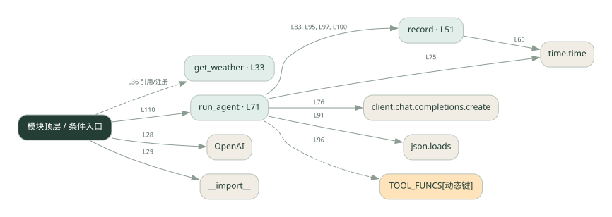

1-9 · 全课程第 9 节
单 Agent 调用记录
009.py
源码快照 ef867db26321 · 静态解析 · 2026-09-10
01 / 要完成的事
把模型和工具执行过程记下来，展示调用与耗时。
02 / 为什么要做
只看最终答案无法知道慢在哪、错在哪。
03 / 当前代码状态
模型请求与本地工具是不同边界：这些文件中的天气工具使用示例逻辑，不能将示例天气当成实时查询结果。
存在外部服务或模型依赖；执行前需按源文件配置依赖和凭据，可能联网或产生 API 费用。 本次只做静态解析，没有运行练习，也没有替你填写或修改原代码。
04 / 调用图
打开大图 ↗实线：源码中的直接调用；虚线：函数引用/注册、动态调用或按方法名推断的候选。L 是调用所在源码行号。箭头不表示执行顺序或每次必经；分支、循环、异步调度及框架内部调用需结合源码。灰色是外部/未解析目标，橙色是动态分发；省略 print、len 和常规容器操作以减少干扰。孤立函数可能尚未接入。

先从 模块入口 出发，沿箭头找到本文件函数，再查看外部调用或动态分发。右侧调用清单保留所有静态调用点，能回到原文件逐行对照。
05 / 函数定位
| 函数 / 定义行 | 职责（源码注释） | 内部调用 |
|---|---|---|
get_weatherL33 | 以源码函数体为准；下列调用展示其依赖。 | 未发现显式函数调用（可能直接计算、读写状态或尚未实现） |
recordL51 | 记录一条 trace。kind=类型，content=内容，tokens=token数，t0=开始时间戳（算耗时用） | len, round, time.time, trace.append, print |
run_agentL71 | 以源码函数体为准；下列调用展示其依赖。 | range, time.time, client.chat.completions.create, record, messages.append, json.loads, TOOL_FUNCS[动态键], str |
这样做的优点
可以沿记录回看输入、输出和执行步骤。
代价与局限
进程内记录不是完整监控系统；真实日志还需脱敏、存储和查询。
适用场景
调试工具调用链、比较不同实现耗时。
不宜直接照搬
需要跨进程追踪和长期审计却只有内存日志的系统。
动手检验理解
让某个工具变慢，检查能否从记录中定位这一段。
有未实现位置时先预测，再补齐验证。能启动不等于逻辑正确。
查看全部 40 个静态调用 / 引用点
| 调用方 | 目标 | 源码行 | 类型 |
|---|---|---|---|
| <模块入口> | OpenAI | 28 | 调用 |
| <模块入口> | __import__ | 29 | 调用 |
| record | len | 53 | 调用 |
| record | round | 60 | 调用 |
| record | time.time | 60 | 调用 |
| record | trace.append | 61 | 调用 |
| record | print | 67 | 调用 |
| run_agent | range | 74 | 调用 |
| run_agent | time.time | 75 | 调用 |
| run_agent | client.chat.completions.create | 76 | 调用 |
| run_agent | record | 83 | 调用 |
| run_agent | messages.append | 88 | 调用 |
| run_agent | json.loads | 91 | 调用 |
| run_agent | record | 95 | 调用 |
| run_agent | TOOL_FUNCS[动态键] | 96 | 调用 |
| run_agent | record | 97 | 调用 |
| run_agent | str | 97 | 调用 |
| run_agent | messages.append | 98 | 调用 |
| run_agent | str | 98 | 调用 |
| run_agent | record | 100 | 调用 |
| run_agent | messages.append | 101 | 调用 |
| <模块入口> | print | 107 | 调用 |
| <模块入口> | print | 108 | 调用 |
| <模块入口> | print | 109 | 调用 |
| <模块入口> | run_agent | 110 | 调用 |
| <模块入口> | print | 112 | 调用 |
| <模块入口> | print | 113 | 调用 |
| <模块入口> | print | 114 | 调用 |
| <模块入口> | sum | 115 | 调用 |
| <模块入口> | e.get | 115 | 调用 |
| <模块入口> | sum | 116 | 调用 |
| <模块入口> | e.get | 116 | 调用 |
| <模块入口> | sum | 117 | 调用 |
| <模块入口> | print | 118 | 调用 |
| <模块入口> | len | 118 | 调用 |
| <模块入口> | print | 119 | 调用 |
| <模块入口> | print | 120 | 调用 |
| <模块入口> | print | 121 | 调用 |
| <模块入口> | print | 122 | 调用 |
| <模块入口> | get_weather | 36 | 引用/注册 |